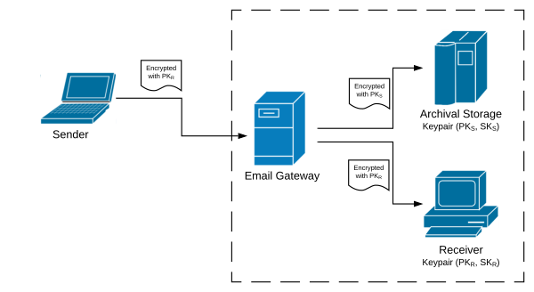

For this question, you are to encrypt your student ID number and email it to me using the following techniques (both ciphertexts can be sent in the same email – in your homework submission, include sourcecode for any programs or scripts you use for this):
Use El Gamal (Construction 11.16 from page 401) where 𝔾 = ℤp* with the following parameters:
My public key is h = 172866579982319669645400780540840375136256388175443622418405
Use “Plain RSA” (Construction 11.26 on page 411), with my public key:
The following ciphertext is an encrypted 9-digit number, created using plain RSA and my public key from part b. Find the plaintext number.
[Hint: You don’t have to factor or otherwise break the RSA key to solve this problem. Think about what the main weakness of “plain RSA” is, and why we don’t use it in practice. For reference, my Python program to solve this took about 15 minutes to run, and the Java version took about 5 minutes.]
Page 433, Exercise 11.2
Consider the following problem: A government agency would like its users to be able to received encrypted emails, but because of public records laws all emails must be securely saved in an archive. The proposed solution is for all emails to go through a gateway that not only sends the original ciphertext to the receiver, but also “translates” the ciphertext to create an encryption of the same message under the archive server’s public key which it sends to the archive. The trick is that the email gateway must do this re-encryption without learning anything about the plaintext message (so decrypting the message is ruled out!).
To help understand the problem, the following diagram shows what we want to do.

This problem is called “proxy re-encryption,” and seems somewhat magical, but it turns out that it is not hard to solve for El Gamal encryption (as given in Construction 11.16 from page 401). The following questions explore various aspects of this problem and the solution for El Gamal. Assume that El Gamal is working over a group 𝔾 of prime size q, with generator g. You can assume there is a simple bijective mapping between numbers in the range 0 to q − 1 (i.e., messages) and elements of the group, which can be efficiently computed in both directions.
Proxy re-encryption is impossible (for any public key cryptosystem) if the gateway only knows public information (keys PKR and PKS). Give a clear explanation of why this must be the case.
If the email gateway knows a “translation key” TKR := [SKR ⋅ SKS − 1 mod q], then proxy re-encryption for El Gamal is possible. Derive an algorithm that takes a ciphertext cR = ⟨rR, sR⟩ that was produced by encrypting some message m (unknown to the email gateway) with public key PKR, and produces a new ciphertext cS = ⟨rS, sS⟩ that is an encryption of the same message but under public key PKS. Prove that your algorithm works correctly. [Big Hint: If y is random and uniformly distributed over ℤq, then y′ = [y ⋅ TKR mod q] is also uniformly distributed. What would the encryption of m be for public key PKS if the randomness used in the encryption algorithm were y′?]
Prove that with this system, the email gateway cannot compute message m. For this part, we require a “break” to give the entire message m, not just some information about m – for a stronger version, see the extra credit at the end of this problem. [Hint: Imagine that there is a PPT algorithm that takes TKR and cR as input, and produces m as output. Show how this algorithm can be used to create an adversary is successful in the CPA experiment against El Gamal.]
A remaining challenge is how the email gateway can get TKR without someone trusting someone else with their private key (since it is computed from two private keys). One additional trick can solve this problem! First, assume that the gateway has an El Gamal keypair (PKG, SKG), and then the following steps are taken:
The receiver encrypts its secret key as (r, s) ← EPKG(SKR) which it sends to the archive server S.
The archive server computes the multiplicative inverse of its private key (mod q), t := [SKS − 1 mod q], then picks a uniform k ← {0, ..., q − 1}. and computes r′ := r ⋅ gk and s′ := s ⋅ PKGk ⋅ t, and sends (r′, s′) to the gateway G.
G performs the normal El Gamal decryption on (r′, s′) to get a plaintext value v.
Expand the first step with formulas for El Gamal encryption, carry those formulas through step 2 to get formulas for r′ and s′, and then show that this is an appropriate encryption of TKR. Explain why, if all parties follow this protocol honestly, no one can get any information about any other party’s private key.
(Extra Credit.) For extra credit, write out a careful proof that this proxy re-encryption method achieves even stronger security than proved in part c above. In particular, show that the email gateway cannot learn any information about message m. To do this, define a CPA-style experiment for the proxy re-encryption problem that challenges an attacker to distinguish between two chosen messages, using the available information, and define a security criterion of what it means for a proxy re-encryption scheme to be CPA-secure. Finally, create a reduction-based proof that shows that if El Gamal encryption is CPA-secure, then this proxy re-encryption scheme is also CPA-secure.
[Note: This problem is stated for Schnorr’s signature scheme, but if you prefer you can answer this question for Schnorr’s identification scheme, given on page 456 of the textbook.] Schnorr’s signature scheme (Construction 12.12 on page 458) was originally invented as a signature scheme that could be used on devices that were computationally weak, like smartcards. The most expensive part of the signature algorithm is the computation of I := gk for random k (all other operations are simple and fast). Noticing that this computation is just the exponentiation of a random value, and it doesn’t depend on either the keys (public or private) or on the message being signed, it is worth considering whether some enhancements could be made to avoid computing I := gk on the smartcard.
Consider a smartcard that is managed by an organization with three parties involved in our threat model: a security manager, who creates the public/private keypair (x, y) and loads x and possibly some additional private data into the smartcard; the user, who can use the card to sign whatever messages he or she wants; and an observer who sees signatures but doesn’t get to choose the messages being signed. The security manager is completely trusted, but any method that can be used by either the user or the observer to extract the private key from the card is a security breach and should be prevented.
Consider each of the following scenarios from the standpoint of both an observer and a dishonest user, and determine whether each scheme is secure with respect to each of these parties. If it is not secure, explain how security can be compromised. If it is secure, give a well-justified argument why this is the case (you don’t have to give a formal proof, but your reasoning should be clear and complete).
Re-using (k, I) pairs. The security manager picks a single k value and computes I := gk before loading this pair of values (k, I) into the chip for later user. When signatures are made, this same k and I value is used every time. The reasoning here is that since neither k nor I depend on the message, we should be able to use the same value every time. Determine the security of this scheme.
The user computes and loads many (k, I) pairs. In this scenario, the security manager only loads the card’s keypair, but the card provides a mechanism for the user to compute a list of (k, I) pairs outside the card, on a more powerful computer, and load them into the card for later use. The card ensures that each (k, I) pair is used only once. Determine the security of this scheme.
Security-manager computes and loads many (k, I) pairs. This is the same as the previous scenario, except the keypairs are computed and loaded into the card by the security manager. The card ensures that each pair is used only once, so if the user uses up all of the loaded pairs, then they must go back to the security manager to get the card “charged up” with new pairs. Determine the security of this scheme.
Consider the following “2-of-n” secret sharing problem: There is a community of n users for which there is an unknown secret s that is set by a trusted administrator, who then generates “shares” of this secret s1, s2, ..., sn, one of each user. A single user’s share gives no information about the secret, but if any two users get together they can use their two shares in order to compute the secret s. To simplify matters, we will assume that all values are in the range 0 to p − 1 for some prime number p.
The following scheme solves this problem — this is really just Shamir’s secret sharing scheme, described in Section 13.3.1 of the textbook, but limited to (2,n) secret-sharing:
To see that this solves the 2-of-n secret sharing problem, answer the following questions:
Derive an algorithm that can take two different shares, si = (i, vi) and sj = (j, vj), and compute the secret s.
Prove that one share gives no information about the secret. In other words, prove that Pr[si = (i, vi)] = 1/p regardless of the secret s, where the probability is taken over the random choice of r. [Note: This is the same condition as equation (2.1) from the textbook, which was the condition for perfect secrecy in encryption, and so this implies perfect secrecy for this secret-sharing scheme.]
Show that the modulus must be prime in order for this to work. To show this, find a non-prime modulus n (like n = 8) and two different secrets s and s′ can give two users the exact same shares for both secrets s or s′. This shows that the secret cannot be uniquely determined by these two users, so the scheme doesn’t work.